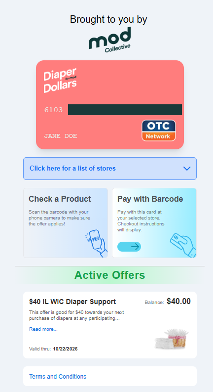
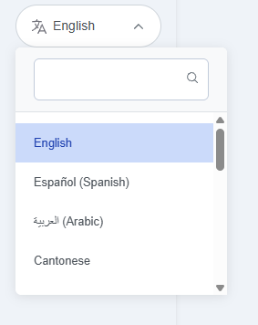
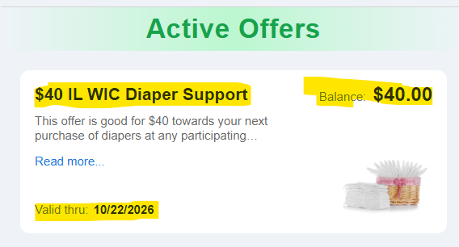
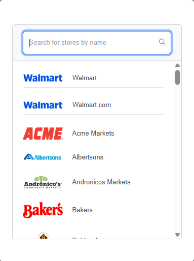
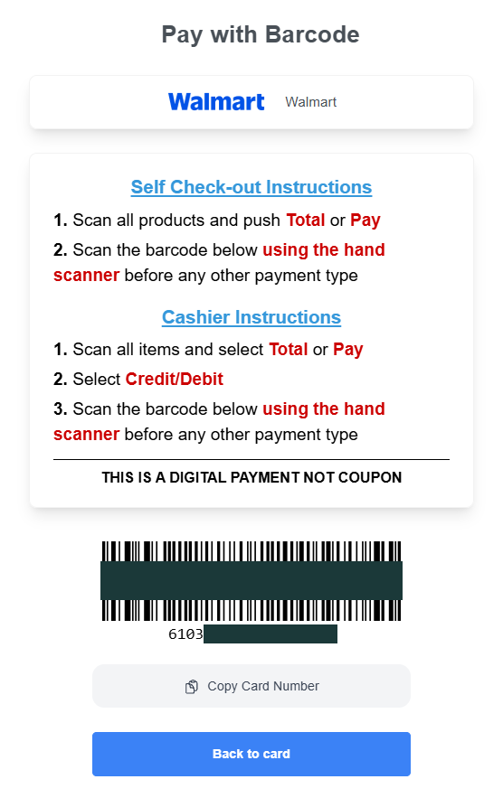
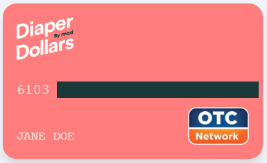
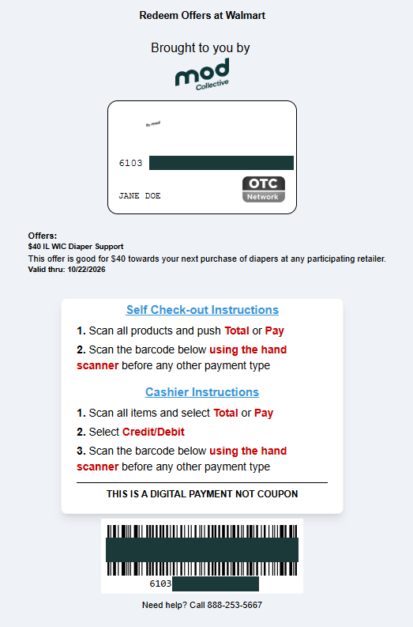
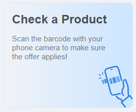

Everything your team needs, in one place.
This page is for staff at participating sites for the FY27 Diaper Distribution Pilot Program. Enrollment steps, family questions, training, and support all live here.
Enrollment window
—days until enrollment opens
Enrollment goal
—applications submitted
Latest update. The intro call is September 24 and the recording goes up under Training & Support afterward. Training modules go out September 25. Enrollment opens October 1.
Enroll a family.
Five minutes at the visit. Nothing after that.
Who is eligible. Any child under age 3 in a family that meets WIC income guidelines (185% FPL). One enrollment per child. Families already using another diaper bank are still eligible.
The steps About 5 minutes
- Open your site's enrollment link on your tablet or computer. Each site has its own link.
- Hand it to the family or walk them through it. The form takes about 5 minutes and includes 3 short evaluation questions.
- The family completes the form and agrees to the terms and conditions. If you are assisting, check the staff attestation box.
- The family submits. They get a text with a verification link right away.
- Done. Nothing else is needed from you.
Lost your enrollment link?
Enrollment links are specific to your site and are not published on this page. That is deliberate. A family enrolled through another site's form is credited to that site, which distorts both your numbers and the state's comparison of WIC clinics against home visiting programs — the central question this pilot year is built to answer.
To get your link back: ask your site coordinator first. If they cannot find it, contact support and we will reissue it to you directly.
What to tell the family about what happens next
-
Right away
A text arrives with a verification link. They have to click it. Nothing moves until they do, and this is where families most often stall.
-
Within one business day
Their eCard arrives by text, along with retailer instructions and the support number.
-
When the card is issued
The first balance loads and the six cycle benefit begins. The clock starts here, not at enrollment.
-
Every 31 days, six times
A fresh balance replaces the old one. Anything unspent is removed, so it has to be used inside the cycle.
-
From then on
The Diaper Dollars support team handles everything. Your site is not involved again.
Why the evaluation questions are on the form
Families may ask why the form has extra questions. Here is what to tell them, depending on your site type. Individual responses are never shared with your site.
WIC clinics
Three questions about diaper accessWhether the family has ever received free diapers from a local organization, what made that difficult if they have, and whether running short has caused them to miss work, skip changes, or cut back on other essentials.
These document what diaper access looks like in counties with no diaper bank.
Home visiting programs
Three questions about connection to benefitsWhether the family had already connected to WIC, Medicaid, SNAP, or childcare assistance before this visit, whether they had a plan for getting diapers, and how concerned they are about affording diapers in the coming months.
These test whether home visiting is an effective way to connect families to this benefit.
How the program works.
Reference information for answering family questions. Each section is short. If you need more, check the FAQ.
The benefit
A digital eCard, reloaded every 31 days for six cycles. The amount depends on how many children under 3 are in the household.
| Children under 3 | Each 31 days | Across all 6 cycles |
|---|---|---|
| 1 child | $40 | $240 |
| 2 children | $80 | $480 |
| 3 children | $120 | $720 |
Three children is the household maximum. The six cycle totals assume each balance is spent in full — whatever is left over is removed at the end of every 31 day cycle and does not carry forward.
The benefit runs six cycles from the date the eCard is issued, with no renewal. This is a limited pilot for State Fiscal Year 2027, and services beyond this year are not guaranteed.
Where the card works
The card runs on the OTC network, which major grocery and pharmacy chains already accept. Families can use it at the register, at self checkout, or online depending on the store. Retailer specific instructions are texted to families with their card.
- Walmart
- Jewel-Osco
- Mariano's
- Food 4 Less
- Walgreens
- CVS
- Dollar General
- Family Dollar
Not a complete list. Families get full retailer details by text when their card is issued.
Eligibility
| Requirement | WIC clinics | Home visiting programs |
|---|---|---|
| Child's age | Under 3 | Under 3 |
| Income | Meets WIC income guidelines (185% FPL) | WIC income guidelines, or Medicaid eligibility |
| Extra paperwork | None beyond your existing WIC process | None |
| Release of Information | Not needed. The family consents on the form itself. | |
| Enrollments per child | One, across all 12 sites. No duplicates. | |
| Already using a diaper bank | Still eligible. | |
The short version: if a family qualifies for WIC, they qualify for this.
Timeline
-
October 1, 2026
Enrollment opens. Staff begin enrolling families at visits.
-
Every 31 days, six times
Each enrolled family receives a fresh balance. The first arrives when their eCard is issued, so the cycle start date differs from family to family.
-
December 23, 2026
Enrollment closes. This is where your staff's involvement ends.
-
Into June 2027
Families who enrolled in December finish their six cycles. Nothing is required from your site during this stretch.
Your role
You do
- Open your site's enrollment link at the visit
- Walk the family through about five minutes of questions
- Check the staff attestation box if you are assisting
You do not
- Handle physical diapers, pallets, storage, or volunteers
- Verify income beyond what you already do for WIC
- Manage the eCard or field benefit questions
- Do anything at all once the family has submitted
Once a family is enrolled, the Diaper Dollars support team handles everything. Families receive the support number and email with their card.
How the Diaper Dollars card works.
You will not manage the card, but families will ask you about it. This is what they see and how it behaves.
The one thing families get wrong
At checkout, the Diaper Dollars barcode has to be scanned before any other payment type. If a family swipes a debit card or inserts cash first, the diaper benefit will not apply to the order. This is the most common reason a payment fails.
How families get the card
Each family receives a unique link by text. There is no app to download. The link opens in any browser on a phone, tablet, or computer, and it is the same link for the full six months — it is not reissued each month. Tell families to save it.
What they see when they open it
A digital card with a payment card number and the client's name on it. This is a real payment method issued to that client, not a coupon or a voucher code. The card number matters for online shopping: it goes in the debit or credit card field at checkout, the same as any other card.

Available in 14 languages
A language selector sits in the top right corner of the card page. Choosing a language translates the entire card experience, not just the menu. Spanish, Arabic, and Cantonese are among the options. Families do not need to ask anyone to set this up.

Active offers, balance, and the 31 day cycle
Below the card, families see their active offer: the amount they receive, the current balance, and a Valid thru date. The amount depends on how many children under 3 are in the household — $40 for one, $80 for two, $120 for three. It arrives as a single balance, not as a separate offer per child.
The balance does not roll over. Families have 31 days to spend it. Whatever is left on the expiration date is removed and a fresh balance is issued for the next cycle. Unspent money does not accumulate and is not returned. Over a six month enrollment there are six of these cycles.
Say this out loud at enrollment. A family saving up several months for a bulk purchase will lose the earlier balances, and they will not find that out until the money is already gone.

Paying in a store
- Open the card link and select Click here for a list of stores.
- Choose the retailer they are shopping at. The list is searchable and covers major grocery and pharmacy chains.
- Select Pay with Barcode. Instructions specific to that retailer appear, for both self checkout and a staffed lane.
- At the register, scan all items and press Total or Pay. At a staffed lane, select Credit/Debit.
- Scan the Diaper Dollars barcode with the hand scanner, before any other form of payment.


Paying online
Families enter the card number from the top of their card into the debit or credit card field at checkout. Online storefronts appear in the store list as their own entries, so a family shopping at Walmart online selects the Walmart.com listing rather than the in-store one.

Printing a card to carry
Families who would rather not use a phone at the register can print one. They pick the retailer they intend to shop at, then use the print button at the bottom right. The result is a print ready card carrying that retailer's checkout instructions and a scannable barcode. It is retailer specific, so a family shopping at two stores prints two.

Checking whether a product is covered
The card page has a Check a Product feature. It opens the phone camera so a family can scan a barcode on the shelf and see immediately whether that item is covered, before they get to the register.

Program guidelines and help
Buttons at the bottom of the card page open the full program guide and a help section with phone, email, and chat support, plus a program FAQ. Families do not need to come back to your site for any of this.
The number families will see on the card, 888-253-5667, is technical support: card access and problems at the register. It is not the MOD Collective line. Program and enrollment questions go to 844-663-2655.
About the Diaper Distribution Pilot Program.
A state funded test of whether Illinois can put a monthly diaper benefit in families' hands through the systems they already use.
What it is
The Diaper Distribution Pilot Program was created by the Illinois General Assembly to test whether Illinois can provide a monthly diaper benefit to families with young children. It is funded through the Illinois Department of Human Services and the Illinois Department of Public Health, and operated by MOD Collective through the Diaper Dollars platform.
Why it exists
No federal program covers diapers. Every major benefit a young family is likely to already receive leaves them out:
- SNAP✕ Excludes diapers
- WIC✕ Excludes diapers
- TANF✕ Excludes diapers
- Medicaid✕ Excludes diapers
What a month's supply costs, per child.
Families with young children who cannot consistently afford the diapers they need.
When families run short, children stay in wet diapers longer, parents miss work because childcare requires a daily diaper supply, and families cut back on food or medicine to cover the gap.
How it works
Instead of distributing physical diapers, the program loads a benefit onto a digital eCard that families use at retailers they already shop at.
| Physical distribution | Diaper Dollars | |
|---|---|---|
| Storage | Warehouse space and pallets | None |
| Staffing | Volunteer coordination | None |
| Reaching families | Families travel to a distribution site | Families shop where they already shop |
| Brand and size | Whatever is in stock | The family chooses |
| Adding a site | New infrastructure | Existing WIC and home visiting channels |
What previous years have shown
The program has operated across multiple regions in Illinois.
Of enrolled families report reducing or eliminating their need for emergency diaper sources after enrolling.
The eCard model has launched at new sites quickly and with minimal disruption to existing workflows.
What this year is testing
FY27 is built around two questions.
Question one
Can this be the primary diaper resource where nothing else exists?Every WIC site in this year's program sits in a county identified as having zero existing diaper distribution.
Question two
Is a WIC clinic the best way to reach families?Two home visiting programs are participating alongside the WIC sites, so the state can compare enrollment, utilization, and reach across both models.
The answers will inform whether and how the program expands in future years.
Training and support.
Who to call, what to watch, and answers to what sites ask most.
For families: the card
Trouble opening the card, or a payment that will not go through at the register. This is the number printed on the card itself, so families may already have it:
For site staff: the program
Enrollment questions, a lost enrollment link, or anything about how the pilot runs. This reaches MOD Collective directly:
Training videos
Frequently asked questions
What happens to money a family does not spend?
It is removed at the end of the 31 day cycle and a fresh balance is issued. Unspent funds do not carry over and are not returned. Tell families this at enrollment, because a family saving up for a bulk purchase will lose the earlier balances without warning.
A family's payment was declined at the register. What went wrong?
Almost always the barcode was scanned after another payment type. It has to be scanned first, with the hand scanner, before cash or any card. If the order was rung up correctly and it still failed, they should call technical support at 888-253-5667.
Why is our enrollment link not on this page?
Enrollment forms are site specific and access to them is controlled for quality assurance. If links were published here, a family could be enrolled through the wrong site's form, which credits them to that site and distorts the state's comparison of WIC clinics against home visiting programs. If you have lost your link, ask your site coordinator, or call 844-663-2655 and we will reissue it.
Do we enroll babies only, or can we enroll toddlers too?
Any child under age 3. Newborns, infants, and toddlers all qualify.
Is there a cap on how many families we can enroll?
No per site cap. The 5,500 target is shared across all 12 sites, first come first served. Enroll every eligible family you see.
What if a family already gets diapers from another program?
They are still eligible. The only restriction is no duplicate enrollments for the same child across sites.
Do we need a Release of Information form?
No. The family consents to share their information directly on the enrollment form. Nothing separate is needed from your office.
Are there printed materials?
No. Everything is texted to families.
What if a family does not get their verification text?
Have them check the phone number they entered. If it is correct and they still have not received it within a few minutes, direct them to the support contact above.
How long does the enrollment form take?
About 5 minutes, including the evaluation questions.
Monthly check in calls
Short calls starting in October to flag issues and hear how enrollment is going across sites. The schedule and recordings are posted here.
- October call: [date TBD]
- November call: [date TBD]
- December call: [date TBD]
The Diaper Distribution Pilot Program is funded by the Illinois Department of Human Services and the Illinois Department of Public Health, and operated by MOD Collective.